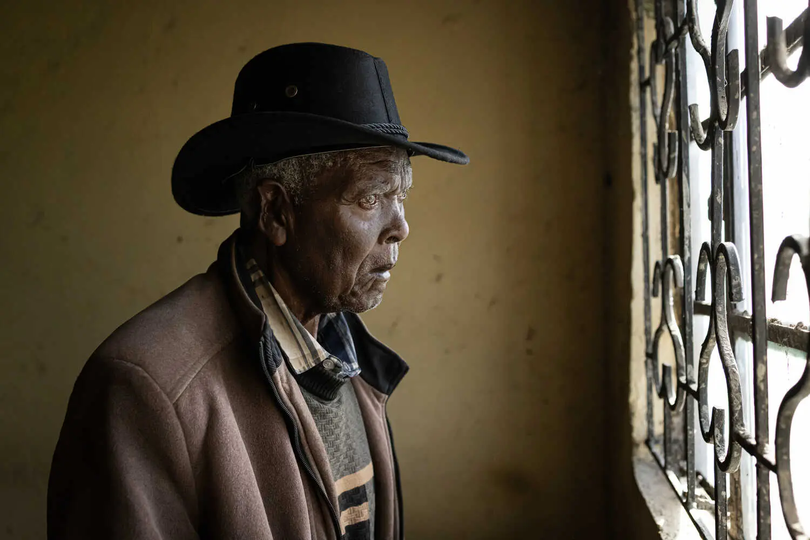
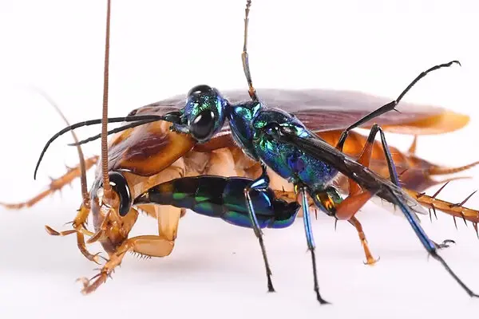
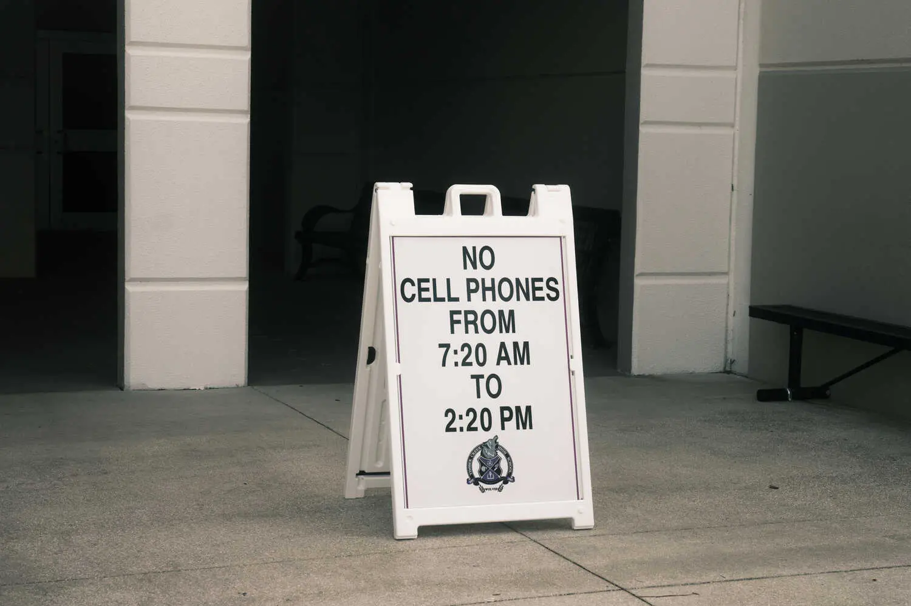
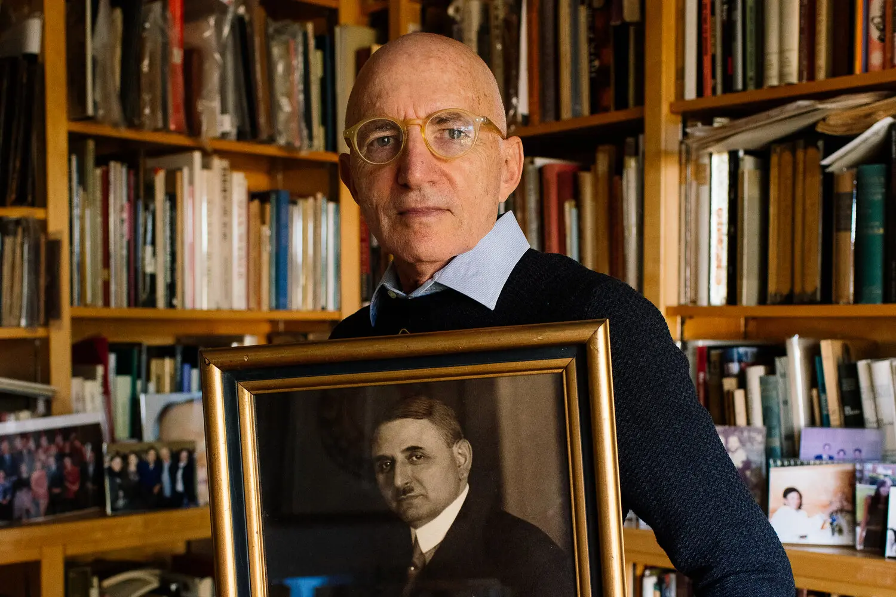

Under Shroud of Secrecy, Israel’s Invasion of Gaza Has Begun
After an air campaign that killed thousands of Palestinians, Israel has begun a ground assault. It has deliberately made it hard to tell what is happening. 5 MIN READ
See a detailed satellite view of Israel’s invasion.
LIVE Oct. 31, 2023, 3:51 a.m. ET6h ago 6H AGO U.N. Officials Describe Catastrophic Conditions in Gaza as Israel Advances
Before the Security Council, two senior officials for humanitarian affairs pleaded for a cease-fire. See more updates 9+
Israel’s military appeared to be approaching Gaza City from at least three sides.
ANALYSIS President Biden’s administration has now become more critical of Israel’s response to Hamas. 7 MIN READ
How Trump’s Verbal Slips Could Weaken His Attacks on Biden’s Age
Donald Trump, 77, has relentlessly attacked President Biden, 80, as being too old for office. But the former president has had his own series of gaffes. 6 MIN READ
King Charles, Visiting Kenya, Faces Calls to Answer for Colonial Abuses
Older Kenyans want an apology and reparations. Younger Kenyans want an acknowledgment of more recent alleged abuses by British companies and troops. 5 MIN READ
The Great Read Desperately Seeking Da Silvano
For decades, Silvano Marchetto’s Greenwich Village trattoria was a celebrity haven, serving Brad Pitt, Beyoncé and Jay-Z. Then he vanished. What happened?8 MIN READ
.webp)
Prosecutors Turn Sam Bankman-Fried’s Own Words Against Him
Asked during his cross-examination about his public statements and how he ran his crypto empire, the FTX founder repeatedly said he couldn’t remember. 5 MIN READ
X, formerly known as Twitter, said it was worth $19 billion, down from $44 billion last year. 2 MIN READ
bIn Global Race to Offer Green Subsidies, U.K. Prefers Slow and Steady
Competing against sizable U.S. incentives, Britain is choosing a less expensive route, winning some fans while exasperating others. 6 MIN READ
Police Were Told Maine Gunman Had Threatened to Carry Out Shooting Spree
Officials knew of an Army reservist’s deteriorating mental health five months before he carried out America’s deadliest mass shooting this year. 5 MIN READ
Driven Out of Pakistan, Afghans Face an Uncertain Future
More than 70,000 undocumented Afghans have been forced across the border in recent weeks to meet a Wednesday deadline ordered by the Pakistani government. 5 MIN READ
Matthew Perry Was One of TV’s Best Sparring Partners
Perry will always be remembered as Chandler on “Friends,” but his performances in shows like “The West Wing” revealed his subtle gifts, our critic writes. 4 MIN READ
“We are all so utterly devastated”: The cast of “Friends” reacted to Matthew Perry’s death. 3 MIN READ
A Leaning Tower in Italy (Not Pisa) Becomes a Worry
City officials in Bologna have closed a city-center square as they study what to do about the Garisenda Tower. A solution could take years. 4 MIN READ
More News Autoworkers Score Big Wins in New Contracts With Carmakers
Tentative accords at Ford Motor, General Motors and Stellantis are the most generous in decades, raising costs as the industry shifts to electric vehicles. 5 MIN READ
Japan Takes Another Step Away From Easy Money
The Bank of Japan said it would be more flexible in how it manages government bond yields, citing rising inflation. 3 MIN READ
A Player’s Death Devastated the Hockey World. Will It Lead to Changes?
Adam Johnson died after he was cut in the neck by a skate blade. Some N.H.L. players are reconsidering protective equipment they previously shunned. FROM THE ATHLETIC
$23,500 in Coins to Pay a Settlement? A Judge Says Try Again.
A Colorado judge ordered a welding company to use a check or other conventional method to pay a settlement after it tried to deliver 6,500 pounds in coins. 3 MIN READ
Stella Kalinina for The New York Times
Southern California Beyond the Freeway
There’s history around every curve on the back roads between Los Angeles and Los Olivos, through mountains, canyons and star-studded enclaves. 7 MIN READ
.webp)
The daughter of the artist Donald Judd invited guests to her childhood home in SoHo for a meal. 5 MIN READ
If you loathe cockroaches, you’re going to love this tiny, beautiful wasp. 3 MIN READ
Opinion
ZEYNEP TUFEKCI
Past Lies About War in the Middle East are Getting in the Way of the Truth Today 6 MIN READ
.webp)
JAMELLE BOUIE
America’s Rifle Fetish Is Destroying Its Sense of Freedom 4 MIN READ
PETER SUDERMAN
On This Issue, the House G.O.P. ‘Whack Jobs’ Have a Point 5 MIN READ
ROZINA ALI
Muslim-Americans Ask: Have We Learned Nothing from 9/11? 6 MIN READ
JAMEEL JAFFER
The Supreme Court’s Social Media Cases Can Strengthen Our Democracy 6 MIN READ
PATTI DAVIS
Matthew Perry and the Loneliness of Addiction 4 MIN READ
SERGE SCHMEMANN
Why Oslo Still Has Relevance 4 MIN READ
PETER COY
The Patent Fight That Could Take Apple Watches Off the Market 5 MIN READ
THE EZRA KLEIN SHOWAUDIO
If Not This, Then What Should Israel Do? 64 MIN LISTEN
PAUL KRUGMAN
Autoworkers Strike a Blow for Equality 4 MIN REA
This Florida School District Banned Cellphones. Here’s What Happened.
Schools in Orlando took a tougher approach than a new state law required. Student engagement increased. So did the hunt for contraband phones. 6 MIN READ
School cellphone bans are trending. Do they work? 3 MIN READ
The Candy That Grew From Kernel to Icon
Love it or hate it, candy corn, a Halloween staple, has proved it has staying power. 4 MIN READ
The Busy Doctor Who Gave Himself Another Job: Tracking Nazi Loot
Dr. Michael Hayden has spent more than a decade searching for the silver Judaica stolen from his grandparents, who were killed by the Nazis. 6 MIN READ
What to Watch for as the Federal Reserve Meets This Week
Central bankers are expected to leave interest rates steady at a 22-year high of 5.25 to 5.5 percent. Investors are looking for hints at what’s next. 4 MIN READ
The eurozone’s economy shrank unexpectedly this summer, as rising interest rates cooled momentum. 3 MIN READ
Suspected Gunman Holds a Hostage in Post Office Near Tokyo
One of two female hostages has been released in an episode that followed a report of a shooting at a nearby hospital. 2 MIN READ
Ashley Southall
Reporting from Manhatta
Earlier this month, three cousins finally opened ConBud, one of New York’s first licensed marijuana dispensaries. Here’s their story → Laila Stevens for The New York Time
The Morning
David Leonhardt explains the gains won by striking autoworkers. 7 MIN READ
THE DAILYAUDIO When did the U.A.W. realize its strike was working?
The Great Read
Bariatric Surgery at 16
If childhood obesity is considered an epidemic, how far should doctors go to treat it? 28 MIN READ
Hawaii Bribery Scandal Casts a Shadow Over Lahaina’s Ruins 7 MIN READ
Mom’s Favorite Chicken Dinner Gets a Makeover 2 MIN READ
Stop, Before You Close This Tab (or Any Others) … 4 MIN READ
Sam Bankman-Fried Denies Knowing FTX Money Was Missing, as He Concludes Testimony
The founder of the FTX crypto exchange was grilled by a federal prosecutor for a second day, just before both sides rested their cases in the criminal fraud trial. 4 MIN READ
Amir Hamja for The New York Times
The Many People Behind ‘The Woman in Me’
Three authors helped Britney Spears get her life story on the page. 4 MIN READ
Valerie Macon/Agence France-Presse — Getty Images
ADVERTISEMENT
the new york times
All The Time. In One Subscription.
$0.25 a week for your first six months.
cancel or pause anytime
More News
Russia Detains 2 Soldiers Suspected of Killing 9 Civilians
The arrest was a rare admission by Moscow that its forces may have committed a crime against civilians. Experts warned it might be political posturing. 4 MIN READ
Alexander Zverev Is Fined in New Abuse Case Involving Former Partner
The German tennis star was ordered to pay a penalty in a case involving the alleged physical abuse of the mother of his child, his lawyers said. 2 MIN READ
Home Sellers Win $1.8 Billion After Jury Finds Conspiracy Among Realtors
The National Association of Realtors and several brokerages were ordered to pay home sellers who said they were forced to pay excessive fees. 5 MIN READ
Ian Curtis
A Footpath in England, Torn Down, Keeps Being Rebuilt by ‘Fairies’
A small bridge in the English village of Stiffkey was dismantled last year. It was rebuilt overnight, dismantled a second time and rebuilt again. 2 MIN READ
Kamala Harris to Announce Steps to Curb Risks of A.I. 3 MIN READ
Second Maryland Man to Receive an Altered Pig’s Heart Has Died 3 MIN READ
Woman Is Accused of Killing Boyfriend With Antifreeze for Inheritance 4 MIN READ
Tropical Storm Pilar Kills at Least 2 in El Salvador 2 MIN READ
Trump Sues to Ensure He Is on the Ballot in Michigan 3 MIN READ
Texas Rangers Beat Arizona Diamondbacks in World Series Game 4 FROM THE ATHLETIC
Well
.webp)
Delcan & Co.
3 Steps to Age Exuberantly 5 MIN READ
.webp)
Aileen Son for The New York Times
Is It Better to Brush Your Teeth Before Breakfast or After? 4 MIN READ
Tony Cenicola/The New York Times
Test Your Candy I.Q.
.webp)
Joyce Lee for The New York Times
Is Arthritis Avoidable? 3 MIN READ

Linda Merad
How to Fall Back Without Missing a Beat 5 MIN READ
Culture and Lifestyle
It’s a Bird. It’s a Dame. It’s Heidi Klum’s Halloween Costume.
The model and television host dressed as a giant peacock with some help from Cirque du Soleil. 3 MIN READ

South Asian Leaders Kick Off New York’s Diwali Season
Prabal Gurung and Jessel Taank celebrated on Saturday. 3 MIN READ
Coco Gauff Has Grabbed Our Attention
She won the U.S. Open and seized the spotlight. 4 MIN READ
Michael Richards Still Burns Bright
The sculptor, who died on 9/11, expanded art’s political possibilities, writes our critic. 6 MIN READ
Courtney Bryan’s Music Brings It All Together
She fuses different styles for a sound that is entirely her own. 4 MIN READ
CookingRecipes and guides
Jospeph De Leo for The New York Times
No-Knead Bread
Linda Xiao for The New York Times
Easiest Chicken Noodle Soup
Chris Simpson for The New York Times
Brunswick Stew
Linda Xiao for The New York Times
Easiest Chicken Noodle Soup
.webp)
Chris Simpson for The New York Times
Brunswick Stew

Christopher Testani for The New York Times
Potato Soup
GamesDaily puzzles
Wordle
Guess the 5-letter word with 6 chances.
Guess the 5-letter word with 6 chances.
In case you need some puzzle help.

Connections
Group words that share a common thread.
Spelling Bee
Subscribers can now play puzzles from previous days.
The Crossword
Get clued in with wordplay, every day.
Letter Boxed
Create words using letters around the square.

Climate and Environment
Energy Dept. Pours Billions Into Power Grids but Warns It’s Not Enough Window for Meeting Key Climate Goal Is Even Narrower Than Thought Shipping Contributes Heavily to Climate Change. Are Green Ships the Solution?
Education
Who Decides Penn’s Future: Donors or the University? Publisher Scholastic Backtracks on Isolating Works on Race and Gender G.O.P. Candidates Call for Campus Crackdowns Against Anti-Israel Speech
Health
Doctors Wrestle With A.I. in Patient Care, Citing Lax Oversight Second Maryland Man to Receive an Altered Pig’s Heart Has Died Panel Says That Innovative Sickle Cell Cure Is Safe Enough for Patients
Reader Center
The Spirited History of ‘Ghost’ For One Writer, Crime Is a ‘Window’ Into Society A Critic With Monsters on His Mind
Explore Times Events

The Fault Lines at Climate Week Billionaire Moguls and a Trillion Trees Christian Cooper and Amy Tan on How Birding Brings Them Joy
Theater
‘I Can Get It for You Wholesale’ Review: Rag Trade Revival, Recut for Today Review: In ‘Stereophonic,’ the Rock Revolution Will Be Recorded ‘Nosferatu, a 3D Symphony of Horror’ Review: A Lip-Smacking Scare
Dance
At Ballet Theater, a Thrilling Puck and a Moment to Take Stock Joey Evans Is Back. This Time He’s a Struggling Artist. Alessandra Ferri’s Next Act: Running the Vienna State Ballet
Book Review
Caster Semenya: ‘I’m Still a Woman’ A Handful of Luscious, Soapy, Sexy Romance Novels ‘You Can’t Hide It’: Georgette Heyer and the Perils of Posthumous Revision
Travel
The Big Cheese (Tour) Southern California Beyond the Freeway It Might Be Time to Consider Timisoara
Love
Weddings at the Edge of the World A Hairless Cat and Nickelback. What Could Be More Romantic? Vowing Till Death Do Us Part at the Hotel That Inspired ‘The Shining’
Real Estate
Ready to Retire? Consider Your Family First. Leah Remini Lists Her Los Angeles Home a Third Time Is Buying Real Estate With a Friend Really a Good Idea?
JOHN WASHINGTON
The First of Our Friends to Go Matthew Perry Was One of TV’s Best Sparring Partners Could Matthew Perry’s Chandler-Speak Be Any More Memorable?
The New York Time
NEWS
Home Page World Coronavirus U.S. News U.S. Politics New York Business Tech Science Sports Wildfire Tracker Obituaries Today's Paper Trending Corrections
OPINION
Today's Opinion Columnists Editorials Guest Essays Letters Sunday Opinion Opinion Video
ARTS
Today's Arts Art & Design Books Best Sellers Book List Dance Movies Music Pop Culture Television Theater Video: Arts
LIVING
Automotive Games Education Food Health Jobs Love Magazine Parenting Real Estate Style T Magazine Travel
MORE
Reader Center The Athletic Wirecutter Cooking Headway Live Events The Learning Network Podcasts Video Graphics TimesMachine Times Store Manage My Account Gift Articles NYTLicensing
SUBSCRIBE
Home Delivery
Digital Subscriptions
Games
Cooking
Email Newsletters Corporate Subscriptions Education Rate
Mobile Applications Replica Edition International Canada Español 中文网
© 2023 The New York Times Company
NYTCo
Contact Us
Accessibility
Work with us
Advertise
T Brand Studio
Your Ad Choices
Privacy Policy
Terms of Service
Terms of Sale
Site Map
Help
Subscriptions